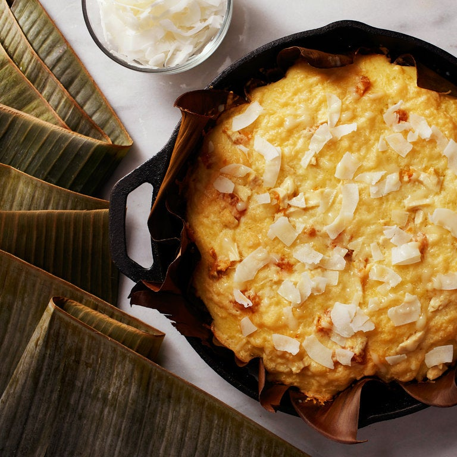

In its simplest form, bibingka is a simple Filipino cake that consists of rice flour and water. It was initially prepared in clay pots that were lined with banana leaves, which would impart a distinctive, smoky flavor to the dish. Bibinka is believed to have appeared under the foreign culinary influence, and the first written reference describing a similar cake dates back to 1751.
Meal prep time : 1 hour
Servings : 6